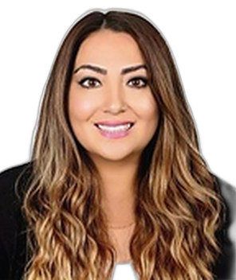

Profile
Aytakin Huseynli is an assistant research professor at the Brown School of Washington University in St. Louis, where she has worked since 2024. She was a postdoctoral scholar there in 2022–2024. She received a PhD from the Brown School in 2022. The dissertation is Exploring the Relationship between Resource Curse and Child Wellbeing, specifically in post-Soviet Countries, chaired by Michael Sherraden. She received an MSW from the Brown School in 2005 and a bachelor’s degree in English and German philology from Azerbaijan State University of Languages in 1995. She is also a regional household-survey consultant for UNICEF Europe and Central Asia.
Work experience
Brown School, Washington University in St. Louis, United States
2024–presentAssistant Research Professor
UNICEF Europe and Central Asia
2022–presentRegional household-survey consultant
UNICEF
2019–2022Data, statistics, research, and evaluation expert for Eurasia
Center for Social Development, Washington University in St. Louis
2015–2022Graduate research associate
Center for Innovation in Child Maltreatment Policy, Research, and Training, Washington University in St. Louis
2018–2022Graduate research assistant
Social Policy Institute, Washington University in St. Louis
2018–2019Graduate research assistant
Crown Family School of Social Work, Practice and Policy, University of Chicago
2015–2017Graduate research assistant
Hilfsverk Austria International
2009–2014Head of the country office in Azerbaijan
Azerbaijan Public Social Work Union
2009–presentFounder and board member
UNICEF
2007–2010National consultant on social work
Open Society Foundations
2007–2013National scholar for higher-education reform support
UNICEF
2007 and 2009National consultant on child protection
Ministry of Labor and Social Protection of Azerbaijan
2006–2007Senior advisor to the minister
- Direct practice with children and families
Save the Children
2004–2006Family support manager
- Direct practice with children and families
Education
Postdoctoral scholar
2022–2024Brown School, Washington University in St. Louis, United States
PhD
2022Dissertation: Exploring the Relationship between Resource Curse and Child Wellbeing, specifically in post-Soviet Countries. Chair: Michael Sherraden
Brown School, Washington University in St. Louis, United States
MSW
2005Brown School, Washington University in St. Louis, United States
Bachelor’s degree
1995English and German philology
Azerbaijan State University of Languages, Azerbaijan
Grants & projects
- 2020–2021 — Labor rights of people with disabilities in Azerbaijan, Georgia, and Moldova. Principal investigator. $31,000 — European Union, Eastern Partnership Civil Society Forum
- 2018 — Awareness raising on child savings accounts and Child Development Accounts in Azerbaijan. Principal investigator. $7,000 — Azerbaijan government funding for nonprofits
- 2017–2018 — Upgrading national social work education quality standards to comply with global standards. Principal investigator. $7,000 — International Association of Schools of Social Work
- 2017 — Applying an ecological perspective to increase mental-health awareness among children. Principal investigator. $6,500 — BEARR Trust Small Grants Scheme, United Kingdom
- 2015–2017 — Shaping sustainable social change by strengthening social workers and their associations in Moldova, Georgia, Azerbaijan, and Armenia. Co-principal investigator. $500,000 — European Union and Austrian Development Agency
- 2014 — Examining the relationship between the resource curse and child well-being in Azerbaijan. Principal investigator. $6,000 — Open Society Foundations
- 2018 — Finding local needs and conditions for Child Development Accounts. Principal investigator. $7,000 — Center for Social Development, Washington University in St. Louis
- 2019–2020 — Dissertation grant. $22,000 — Washington University in St. Louis
Teaching
- Evaluation of Programs and Services; International Social and Economic Development Policy. Redesigned and taught — Brown School, Washington University in St. Louis
- Practice and Program Evaluation — University of Missouri–St. Louis, School of Social Work
- Research Methods for MBA; Quantitative and Qualitative Data Analysis — Azerbaijan Diplomatic Academy, School of Business
- Social Work with Families and Children; Introduction to Social Work; Family and Child Well-being Policies and Services — Baku State University
- Practice in Global Issues — Saint Louis University, School of Social Work
- Co-taught: Global Anti-poverty Strategies; Evaluation of Programs and Services; Research Methods for Social Sciences with Statistical Application — Brown School, Washington University in St. Louis
Publications
Book chapters
1. Huseynli, A. (2018). Predictors of child marriages in Azerbaijan: Multilevel analysis. In L. Sayfutdinova, C. Buckley, & A. Valiyev (Eds.), Study Series on Public Policy Issues (Vol. 1, pp. 178–197). Caucasus Resource Center.
2. Huseynli, A. (2023). The role of social workers in achieving sustainable development goals in Azerbaijan. In D. Androff & J. Damanik (Eds.), International handbook on social work, social development, and the sustainable development goals. Routledge.
Peer-reviewed journal articles
1. Huseynli, A. (2022). Asset building policies to lift the resource curse: child development accounts in oil-and-gas-rich countries. Children and Youth Services Review, 145, 106717.
2. Huseynli, A. (2022). Social work education in post-soviet countries: progress of Azerbaijan. The British Journal of Social Work, 53(5), 2560–2580.
3. Huseynli, A., & Jonson-Reid, M. (2022). Child well-being in post-Soviet countries: discipline practices in families in Azerbaijan. Child Indicators Research, 16(1), 317–336.
4. Huseynli, A. (2022). Social work in Azerbaijan: achievements and challenges of the profession. International Social Work. https://doi.org/10.1177/00208728221075824.
5. Kennedy, A., Kaushik, G., Dubinsky, E., Jonson-Reid, M., & Huseynli, A. (2021). Direct and indirect cost savings from STI testing, treatment, and counseling among foster youth. Sexually Transmitted Disease, 49(1), 86–89. https://doi.org/10.1097/OLQ.0000000000001511.
6. Rosen, M. H., Pinto, O., Kondratjeva, O., Roll, S. P., Huseynli, A., & Grinstein-Weiss, M. (2020). Household savings decisions in Israel’s child savings program: The role of demographic, financial, and intrinsic factors. Journal of Family & Economic Issues, 42, 368–386. https://doi.org/10.1007/s10834-020-09724-6.
7. Huseynli, A. (2018). Implementation of deinstitutionalization of childcare institutions in postsoviet countries: The case of Azerbaijan. Child Abuse and Neglect, 76, 160–172. https://doi.org/10.1016/j.chiabu.2017.10.020.
8. Ismayilova, L., Ssewamala, F., & Huseynli, A. (2014). Reforming child institutional care in the Post-Soviet bloc: The potential role of family-based empowerment strategies. Children and Youth Services Review, 47(2), 136–148. https://doi.org/10.1016/j.childyouth.2014.09.007.
Invited talks and conference participation
- 2024 — Society for Social Work and Research 28th Annual Conference, Washington, D.C. — Symposium organized — Building Assets for Child Development: A Global Policy Innovation Symposium
- 2024 — Society for Social Work and Research 28th Annual Conference, Washington, D.C. — Paper — Effects of Child Development Accounts on Family Financial Well-Being: Evidence from a Randomized Policy Experiment
- 2024 — Society for Social Work and Research 28th Annual Conference, Washington, D.C. — Paper — Design and Development of Child Development Accounts in Kazakhstan
- 2024 — Society for Social Work and Research 28th Annual Conference, Washington, D.C. — Paper — Governance and child well-being: evidence from low- to middle-income countries
- 2023 — Society for Social Work and Research 27th Annual Conference, Washington, D.C. — Symposium organized — Financial Capability and Asset Building in International Perspective
- 2023 — China Financial Social Work Forum, China — Invited lecture — Asset-building policies in oil-, gas-, and mineral-rich countries: the cases of Kazakhstan and Azerbaijan
- 2023 — International Conference on Prevention of Domestic Violence, Baku, Azerbaijan — Invited lecture — Financial capability and asset-building to reduce and prevent domestic violence
- 2023 — Early Childhood Education Conference, Baku, Azerbaijan — Invited lecture — Child maltreatment in early childhood development and education
- 2023 — Early Childhood Education Conference, Baku, Azerbaijan — Invited lecture — U.S. models in community, family, and school collaboration in early childhood education
- 2023 — International Conference on Social Work and Social Research, Baku, Azerbaijan — Invited lecture — Child Development Accounts in oil- and gas-rich countries: the cases of Azerbaijan and Kazakhstan
- 2023 — Baku Business University, Baku, Azerbaijan — Invited lecture — Social work development in Azerbaijan: achievements and challenges
- 2023 — Azerbaijan Social Work Public Union conference, virtual — Invited lecture — What does inclusion, equity, and diversity mean to you?
- 2023 — Society for Social Work and Research 27th Annual Conference, Phoenix, Arizona — Paper — Child well-being in Ukraine, Moldova, Azerbaijan, Georgia, Kazakhstan, and Kyrgyzstan
- 2018 — World Conference on Social Work, Education and Social Development, Dublin, Ireland — Symposium organized — Professionalization of social work in post-socialist countries
- 2021 — Oxford School of Global and Area Studies, University of Oxford, United Kingdom — Invited lecture — Child well-being and child savings accounts in Azerbaijan: theory and possible policy design